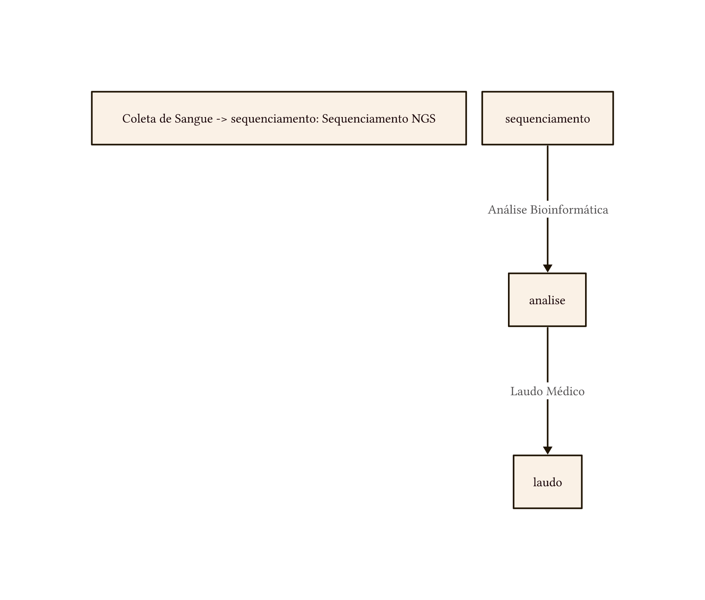

ARQUITETURA DE SISTEMAS
Motor d2 — Diagramação Declarativa Moderna
O motor d2 oferece uma das linguagens mais elegantes e limpas para desenho de arquiteturas de sistemas, topologias de microsserviços e pipelines analíticos. Ele compila código declarativo em gráficos vetoriais SVG de alta nitidez.
⚙️ Diretivas de Configuração (%%)
| Diretiva | Sinônimos | Tipo | Padrão | Descrição |
|---|---|---|---|---|
layout.width |
width |
String | 75% |
Largura do diagrama no corpo da página (ex.: 80%, 12cm). |
layout.max_width |
max-width |
String | 500pt |
Largura máxima em pontos tipográficos. |
src |
file |
String | - | Importa o código D2 a partir de arquivo .d2 anexo. |
🧪 Exemplos Práticos
1. Pipeline de Dados Clínicos
Markdown (d2 pipeline)
```d2
%% width=80% max-width=520pt
coleta: Coleta de Sangue Periférico {
shape: oval
}
extracao: Extração Automatizada de DNA
ngs: Sequenciamento NovaSeq 6000 {
shape: cylinder
}
bioinfo: Pipeline Bioinformático (GATK / Joaju) {
shape: rectangle
}
laudo: Laudo Clínico Final {
shape: document
}
coleta -> extracao: Envio Refrigerado
extracao -> ngs: Amostra QC Aprovada
ngs -> bioinfo: Arquivos FASTQ brutos
bioinfo -> laudo: Variantes Filtradas (VCF)
```2. Arquitetura em Camadas com Contêineres
Markdown (d2 containers)
```d2
%% width=85% max-width=580pt
frontend: Camada de Apresentação {
obsidian: Obsidian Vault (Markdown)
templater: Templater Hotkey
obsidian -> templater: Disparo Ctrl+Alt+B
}
backend: Servidor Local Joaju {
router: Express Gateway (:3000)
preprocessor: Pré-processador Dinâmico
r_engine: Rscript (Pedtools)
kroki: Kroki Multi-engine
router -> preprocessor: Parse de Diretivas %%
preprocessor -> r_engine: Tabelas Clínicas
preprocessor -> kroki: Diagramas D2/Mermaid
}
compilador: Núcleo Tipográfico {
pandoc: Pandoc Citeproc (Zotero)
typst: Typst Compiler (ABNT NBR 14724)
pandoc -> typst: AST Estruturada
}
frontend.templater -> backend.router: POST /compile (JSON)
backend.preprocessor -> compilador.pandoc: Markdown Normalizado
compilador.typst -> frontend.obsidian: Buffer Binário PDF
```Resultado da Renderização
